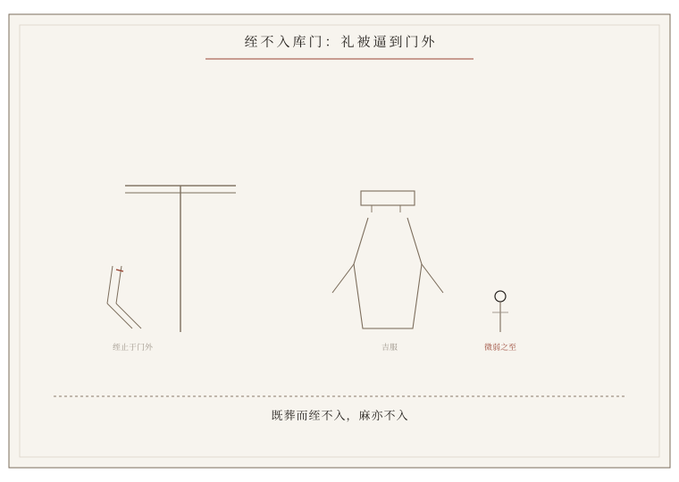

檀弓下 · 四·八十五 · 第 410 课
鲁庄公之丧，既葬，而绖不入库门。士大夫既卒哭，麻不入。
说什么事：鲁庄公的丧事，葬毕之后，孝带的绖不进库门；士大夫卒哭之后，麻绖也不进。
落在哪一层：以「礼之变」为界。此条不是常礼，是「不敢居丧」之实录。
为何编在此位：上是「以哭动一国」，此是「以除服保一国」。一动一敛，正相照。
【经】鲁庄公之丧，既葬，而绖不入库门。士大夫既卒哭，麻不入。
【注】时子般弑，庆父作乱，闵公不敢居丧，葬已，吉服而反。正君臣，欲以防遏之。微弱之至。／麻犹绖也。群臣毕虞卒哭，亦除丧也。闵公既吉服，不与虞卒哭。
【疏】此一节论礼变所由也。庄公，闵公父也。绖，葛绖也。诸侯弁绖葛而葬也。鲁之库门，天子之皋门也。庄公以三十二年薨，大子般立。十月己未，共仲使圉人荦贼子般于党氏，立闵公，庆父作乱。闵公时年八岁，不敢居丧三年，既葬竟，除凶服于外，吉服反，以正君臣，故绖不入库门也。所以至库门而去绖。○经云「绖不入」者，谓葛绖。所以云「不入库门」者，以鲁有三门库、雉、路，库门最在外，以从外来，故「绖不入库门」。绖既不入，衰亦不入可知也。○经云「大夫既卒哭，麻不入」，上云「绖不入」，故云「麻犹绖也」。其实上是君身，绖用葛；士大夫是臣，故绖用麻也。云「群臣毕虞卒哭，亦除丧也」者，亦闵公也。闵公葬而除丧，今群臣卒哭乃除丧者，以闵公既葬，须即位正君臣，故既葬而除；群臣须行虞卒哭之际，故卒哭乃除之。云「闵公既吉服，不与虞卒哭」者，按《论语》云「羔裘玄冠，不以吊」，虞卒哭并是凶事，闵公既服吉服，故不与也。此云「麻不入」者，承上「库门」，亦谓不入库门也。皇氏云：「时祸乱迫蹙，君既服吉服，故士大夫既虞不复受服，至卒哭总除。」
绖 丧带。首绖、腰绖。此谓葛绖。
库门 鲁之外门。鲁三门：库、雉、路，库最在外。
卒哭 哭有定止之祭。
麻 麻绖。君用葛，臣用麻。
不入 不进，谓至门而除。
吉服而反 换吉服而回朝。
防遏 防备遏止。
微弱之至 衰微至极。
鲁庄公的丧事，葬毕之后，孝带的绖不进库门。士大夫卒哭之后，麻绖也不进库门。
此章两句，极短而极沉。
一句记君，一句记臣。
两句皆在记「礼之退」——不是礼坏了，是礼被逼退到门外。
第一层 此条所记不是常礼 注云「闵公不敢居丧」，疏云「此一节论礼变所由也」。
礼书记「变」，正为存「常」。 不记变，则后人以为本如此。
第二层 为何变 庄公薨，子般立，庆父使圉人荦弑子般，立闵公。
闵公时年八岁。 疏四字「微弱之至」，是全章之魂。
第三层 「既葬，吉服而反」 他不敢居丧三年，葬毕即除凶服。
一个八岁的孩子，用脱下丧服的办法，去坐那个位子。 不坐，则国无君；坐了，则己无丧。
第四层 「绖不入库门」 疏云「所以至库门而去绖」。
绖止于最外一门。 库里是朝，朝上不可以有丧带——因为「正君臣」比「尽子哀」更急。
第五层 「绖既不入，衰亦不入可知」 疏此一句，说明此条只是一个「标记」。
礼常以一物代人：绖不入，则全身之衰可知不入。 此即礼之「以少总多」。
第六层 臣之麻只到卒哭 疏云「群臣须行虞卒哭之际，故卒哭乃除之」。
君葬而除，臣卒哭而除。 君急，臣稍缓；君为「正君臣」，臣为「毕其礼」。
第七层 「不与虞卒哭」 疏云虞卒哭并是凶事，闵公既吉服，故不与。
此一退，退得极彻底：连祭也不去。 礼不许他穿吉服行凶事，便索性不许他到场。
第八层 皇氏之说 「祸乱迫蹙，君既服吉服，故士大夫既虞不复受服，至卒哭总除。」
礼之变，至此已从君身推到臣身。 一国之礼，随一人之危而改。
与今日何干 今之守制，多有「位不可久悬」之难；此条正是那种难的实录。
此章给一句：礼之退，退到门外为止，不退到心里。
| 左 | 右 |
|---|---|
| 既葬 | 葬毕 |
| 绖不入库门 | 绖止于最外门 |
| 库门 | 鲁三门之最外 |
| 吉服而反 | 不敢居丧 |
| 正君臣 | 急于此 |
| 士大夫卒哭 | 臣之节 |
| 麻不入 | 麻犹绖 |
| 不与虞卒哭 | 吉服不入凶事 |
| 微弱之至 | 全章之魂 |
画一幅简略的城门外场景，视点平视。画面中部画一座门：一根立柱、一道横梁，梁下为门限。门外地面上画一条长带，带端垂落于地，带身有一道折，表示「绖止于此」。门内画一件朝服：一顶冠、一件长衣，衣形端正，不画人。门内偏左画一个极矮的人形，身长只及常人之半，头微垂。门限处画一道短竖线，示内外之界。不画文字。赭色只用在那条带的折处。
